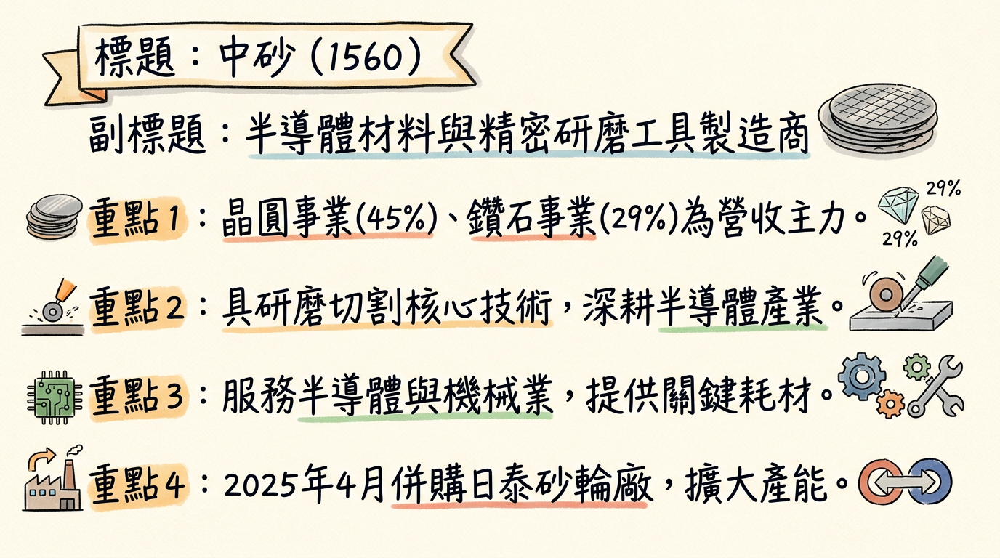
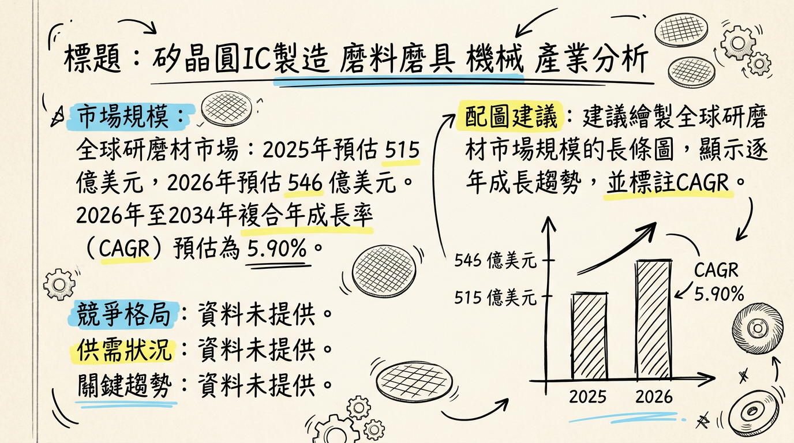
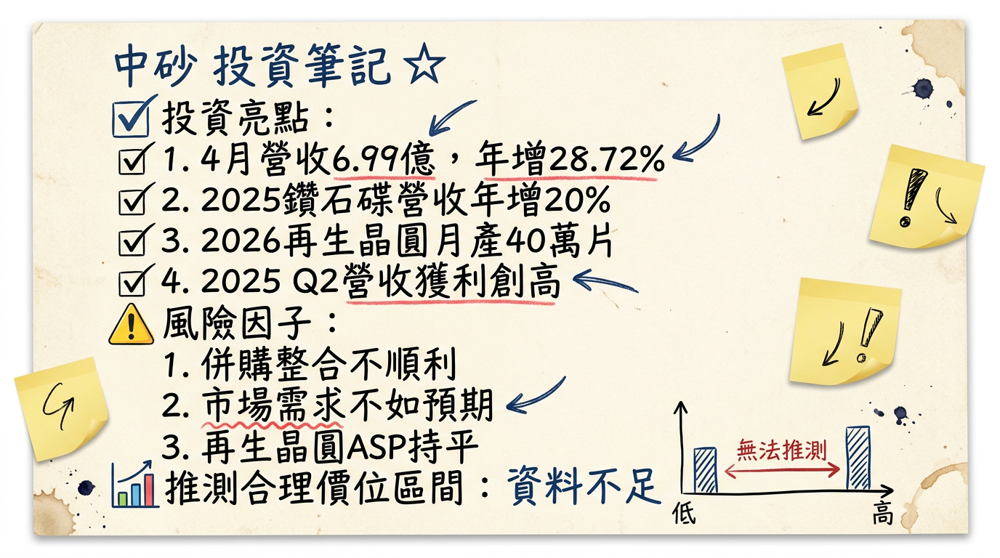

1560 中砂 深度研究報告
一句話摘要
中砂（1560）受惠於半導體先進製程（2奈米、3奈米）對鑽石碟（DBU）與再生晶圓（SBU）的強勁需求，透過積極擴產、新客戶導入及策略性併購，成功優化產品組合，預計2026年營收與獲利將持續雙位數成長，挑戰年度營收百億元大關。
公司概覽
中砂（KINIK）成立於1953年，初期以傳統砂輪業務為主，後成功轉型為具備研磨及切割核心技術的精密工具製造商，並切入半導體產業。其業務橫跨砂輪（ABU）、鑽石碟（DBU）與再生晶圓（SBU）三大領域。
核心產品與服務：
- 砂輪事業部（ABU）：傳統砂輪、鑽石砂輪，主要應用於機械及工具機產業。
- 鑽石事業部（DBU）：CMP鑽石碟，是半導體製程中的關鍵耗材。
- 晶圓事業部（SBU）：提供測試晶圓及再生晶圓服務。
營收結構（依事業部佔比）：
| 事業部 | 2025年第二季營收佔比 | 2024年營收佔比 |
|---|
| 晶圓事業部 (SBU) | 45% | 50% |
| 鑽石事業部 (DBU) | 29% | 32% |
| 砂輪事業部 (ABU，含子公司) | 26% | 18% |
中砂在全球設有工廠，包括台灣5座、泰國2座、日本1座。主要廠區分布如下：
- 砂輪事業部：鶯歌廠，並自2025年4月1日起認列併購日本三井研削砥石株式會社（MKS）及泰國Mitsui Grinding Technology (Thailand) Co,Ltd.（MGT）兩家砂輪子公司的營收。
- 鑽石事業部：鶯歌及樹林廠區。
- 晶圓事業部：竹北及竹南廠區，其中竹北廠約佔三分之二的產能。
所屬細分產業與相關題材：
- 細分產業：半導體材料、再生晶圓製造、精密工具製造。
- 相關題材：
*
半導體先進製程：受惠於台積電2奈米、3奈米、5奈米等先進製程的放量與需求增加。
* AI與HPC需求：AI市場熱潮及高效能運算（HPC）需求推動先進製程和HBM應用，帶動再生晶圓需求。
* 台積電供應鏈：因應客戶台積電供應鏈在地化策略，成功切入半導體產業。
* 新客戶導入：鑽石事業部於2025年第三季開始小量出貨給美系IDM大客戶，預計2026年逐步放量。
* 擴產效益：持續擴增鑽石碟和再生晶圓產能，以滿足客戶強勁需求。
核心競爭優勢
半導體先進製程關鍵耗材領先者： 中砂是全球少數能夠穩定供應半導體先進製程（尤其是2奈米以下）所需高階鑽石碟的廠商之一，與台積電等晶圓代工龍頭客戶深度綁定。
高階再生晶圓擴產搶佔先機： 隨著先進製程複雜度提升，對再生晶圓的需求及規格要求也日益嚴格。中砂積極擴充12吋再生晶圓產能，並提升高階產品比重，滿足客戶在地化供應鏈需求，確保市場領先地位。
多角化佈局降低單一風險： 涵蓋砂輪、鑽石碟、再生晶圓三大事業部，雖然傳統砂輪業務受景氣波動影響，但高成長的半導體相關業務（DBU、SBU）能有效拉動整體營運，產品組合優化有助於提升毛利率。
策略性併購擴大全球足跡： 透過併購日本MKS及泰國MGT砂輪子公司，不僅擴大ABU業務的經濟規模，亦有助於拓展東北亞及東南亞市場，強化全球供應鏈的韌性與營收增長動能。
財務分析
月營收趨勢
| 月份 | 金額 (億元) | 月增率 MoM (%) | 年增率 YoY (%) |
|---|
| 2026年02月 | 7.51 | -0.23 | +24.35 |
| 2026年01月 | 7.53 | +2.35 | +33.07 |
| 2025年12月 | 7.36 | +1.21 | +16.67 |
| 2025年11月 | 7.27 | +2.60 | +19.24 |
| 2025年10月 | 7.08 | +1.43 | +19.36 |
| 2025年09月 | 6.98 | +1.28 | +9.45 |
季度數據
- 2025年第四季： 截至2026年03月06日，完整財報數據尚未正式公布。
- 2025年第三季（最新完整財報數據）：
* 每股盈餘 (EPS)：2.24 元
* 毛利率：32.39%
* 營業利益率：15.93%
* 季營收年增率：12.48%
年度營收與EPS趨勢
| 年度 | 全年營收 (億元) | 每股盈餘 (EPS) (元) | 備註 |
|---|
| 2024 | 70.19 (實際) | 7.10 (實際) | |
| 2025 | 81.50 (實際) | 8.92 (預估中信證) | 市場預估中位數8.7元，最高9元。 |
| 2026 | 90+ (預估) | 12.92 (預估中信證) | 市場預估平均12.35元，最高15.01元。 |
法說會重點
最近一次法說會日期： 2025年10月28日。另於2026年3月4日參加國泰綜合證券舉辦之法說會。
管理層對各產品線的具體出貨量/訂單能見度：
- 鑽石碟事業部 (DBU)： 受惠於先進製程及2奈米用鑽石碟需求增加，並成功導入美系IDM新客戶。月產能已於2024年底達5萬顆，規劃2026年提升至至少6萬顆，並已評估更新廠房以滿足未來持續擴大的產能需求（現有廠區極限可達10萬顆）。
- 晶圓事業部 (SBU - 再生晶圓)： 12吋月產能已達33萬片並持續滿載。原規劃2026年第三季月產能進一步擴增至40萬片，目標加緊趕工提前至2026年第二季末開出。公司正為興建再生晶圓新廠尋覓適合土地。
- 砂輪事業部 (ABU)： 2025年下半年受台灣傳產機械工具機客戶景氣影響，產能利用率持續下降。然自2025年4月起併入日本MKS與泰國MGT砂輪子公司，預計將挹注營收成長。
產能利用率與資本支出：
- 產能利用率： 晶圓事業部 (SBU) 12吋月產能持續滿載；砂輪事業部 (ABU) 產能利用率持續下降。
- 資本支出金額： 2025年第三季的投資活動現金流出淨額為新台幣3.62億元。公司規劃增加20億元資本支出用於擴增SBU竹南廠第二期之12吋矽晶圓生產設備。
管理層給出的2026年營運指引：
- 2026年第一季： 法人預期營收有望較前季持穩向上，獲利也將優於前季，呈現淡季不淡。
- 2026年全年： 公司預期營運將更上一層樓，法人看好在新產能開出帶動下，全年營收可望年增15%至20%，營收目標挑戰90億元以上，並因高階產品貢獻提升，獲利也可同步締新猷，挑戰年營收百億元大關。
券商觀點
目標價預估
| 券商名稱 | 目標價 (新台幣元) | 評等 | 日期 |
|---|
| FactSet (7位分析師中位數) | 485 | 積極樂觀 (7位) | 2026年03月03日 |
| FactSet (最高估值) | 500 | - | 2026年03月03日 |
| FactSet (最低估值) | 370 | - | 2026年03月03日 |
| 中國信託綜合證券 | 500 | - | 2026年01月19日 |
| 未具名券商 | 480 | - | 2026年01月23日 |
2025-2026年EPS預估
| 券商/來源 | 2025年EPS預估 (元) | 2026年EPS預估 (元) | 備註 |
|---|
| FactSet (平均/中位數) | 8.70 (中位數) | 12.35 (平均) | |
| FactSet (最高估值) | 9.00 | 15.01 | |
| FactSet (最低估值) | 7.97 | 9.05 | |
| 中國信託綜合證券 | 8.92 | 12.92 | |
| 未具名券商 | 8.65 | 12.06 | |
| 市場法人平均預估 | 9.00 以上 | 12.62 | 2026年年增率約29.97% |
財報深度分析
利潤率趨勢
| 季度 | 毛利率 (%) | 營業利益率 (%) | 稅後淨利率 (%) |
|---|
| 2025 Q3 | 32.39 | 15.93 | 15.79 |
| 2025 Q2 | 32.14 | 16.65 | 13.28 |
| 2025 Q1 | 30.91 | 15.89 | 16.28 |
| 2024 Q4 | 30.88 | 16.04 | 13.55 |
| 2024 Q3 | 30.06 | 16.43 | 15.30 |
| 2024 Q2 | 31.58 | 16.99 | 15.00 |
| 2024 Q1 | 32.36 | 16.38 | 16.88 |
中砂的毛利率在2024年Q3見底後，於2024年Q4至2025年Q3呈現緩步回升趨勢。這主要歸因於：
產品組合優化： 高毛利的鑽石碟（DBU）與再生晶圓（SBU）在營收佔比持續提升，特別是2奈米製程鑽石碟單價較高，有效拉動整體毛利率。2025年Q1，5奈米以下先進製程鑽石碟營收比重已達58.2%。
匯兌收益貢獻： 2025年Q1與Q3受惠於台幣貶值，產生可觀的匯兌收益，對稅後淨利有正面貢獻。
砂輪業務壓力： 傳統砂輪業務（ABU）受到工具機及機械產業景氣影響，產能利用率下降，是抑制毛利率提升的因素，但預期併購效益將在未來逐步顯現。
存貨與營運效率
| 季度 | 存貨週轉天數 (天) | 應收帳款週轉天數 (天) |
|---|
| 2025 Q3 | 151.83 | 54.76 |
| 2025 Q2 | 138.26 | 49.86 |
| 2025 Q1 | 150.35 | 55.15 |
| 2024 Q4 | 144.12 | 56.09 |
| 2024 Q3 | 141.09 | 56.13 |
| 2024 Q2 | 154.46 | 55.31 |
| 2024 Q1 | 163.57 | 56.25 |
中砂的存貨週轉天數在2024年至2025年間約在138至164天之間波動。整體而言，並無明確的異常堆積現象。考量到公司正積極擴充鑽石碟與再生晶圓產能以因應強勁的半導體先進製程需求，部分備料增加應屬於正常營運範疇，為未來訂單成長做準備。應收帳款週轉天數則保持在50-56天，顯示營運收款效率良好。
資本支出
中砂近年的資本支出主要集中於半導體相關業務的擴產。
- SBU再生晶圓： 規劃增加20億元資本支出，用於擴增竹南廠第二期之12吋矽晶圓生產設備。
- DBU鑽石碟： 規劃更新廠房以滿足未來持續擴大的產能需求。
這些資本支出顯示公司對半導體景氣回升及先進製程需求的信心，預計將推升未來的營收成長。
股權異動
- 董監事/大股東申報轉讓紀錄： 未找到2024年以後的最新紀錄。
- 庫藏股買回紀錄： 未找到2024年以後的最新紀錄。
- 可轉換公司債 (CB)：
* 發行有國內第一次無擔保轉換公司債（簡稱：
中砂一，代碼：15601）。
* 因配發2024年普通股現金股利3.98663389元，依規定轉換價格自2025年7月27日起由288.2元調整為284.6元。
* 發行總額10億元，發行日為2024年6月24日，到期日為2029年6月24日。
- 現金增資或減資計畫： 未找到2024年以後的最新紀錄。
- 股利政策 (現金股利)：
*
2024年度： 每股現金股利
4.0元（除息日2025年7月21日）。
* 2023年度： 每股現金股利3.9965元（除息日2024年7月11日）。
* 2024年現金股利發放率為56.15%。
產業分析
市場規模與成長率
中砂業務橫跨多個子產業，各市場規模及複合年成長率（CAGR）估計如下：
| 事業部 | 市場名稱 | 2025年規模 | 2026年規模 | CAGR (2026-2035/32) |
|---|
| 砂輪 (ABU) | 全球砂輪市場 | 100.6 億美元 | 107.8 億美元 | 7.19% |
| 鑽石碟 (DBU) | 全球半導體CMP鑽石碟市場 | 2.03 億美元 (2025) | - | 6.9% (2025-2032) |
| 再生晶圓(SBU) | 全球矽再生晶圓市場 | 5.0952 億美元 | 5.7963 億美元 | 13.76% |
競爭格局
| 事業部 | 全球主要競爭者 | 中砂市佔率/排名 | 備註 |
|---|
| 鑽石碟 (DBU) | 3M | 全球領先供應商 | 與3M為主要參與者，中砂在先進製程具優勢 |
| 再生晶圓 (SBU) | RS Technologies (日)、辛耘 (台)、昇陽半 (台) | 台灣主要供應商 | RS Technologies為全球巨擘，台灣三雄積極擴產 |
| 砂輪 (ABU) | Robert Bosch, 3M, Saint-Gobain, Fujimi, Tyrolit | 區域性主要供應商 | 透過併購擴大市佔率 |
| 公司名稱 | 2025年EPS預估 | 2026年EPS預估 | 2025年毛利率預估 | 2026年毛利率預估 | 再生晶圓產能現況/規劃 |
|---|
| 中砂 | 9元以上 | 12.92元 | 31.7% / 33% | 32.4% / 37.2% | 目前月產33萬片，目標2026年Q2末/Q3達40萬片。 |
| 辛耘 | 未提供 | 未提供 | 未提供 | 未提供 | 2025年預計新增5-6萬片產能。 |
| 昇陽半 | 未提供 | 未提供 | 未提供 | 未提供 | 2024年底月產63萬片，挑戰2026年達80-90萬片規模。 |
產業趨勢與中砂機會/威脅
1. 關鍵技術趨勢與影響：
- AI驅動半導體需求： AI對高性能晶片（HPC、HBM）的需求呈指數級增長，加速先進製程發展。這直接增加了對中砂鑽石碟（用於晶圓研磨）和高階再生晶圓（用於測試和製程調校）的需求，中砂受益於此趨勢的領先供應商地位。
- 先進製程與先進封裝演進： 半導體製程持續推進至2奈米甚至更先進節點，每次升級都對研磨耗材和測試晶圓提出更高要求。同時，CoWoS等先進封裝技術的擴大應用，也帶動相關材料需求。
- 電動車與綠色製造： 電動車普及推升功率半導體（如SiC）需求。再生晶圓透過回收利用，符合循環經濟及綠色製造趨勢，降低成本同時響應ESG，具長期發展潛力。
2. 對中砂的具體機會與威脅：
*
先進製程滲透率提升： 台積電2奈米、N3/N2等先進製程放量，大幅提升中砂高階鑽石碟的市佔率與出貨量。
* 高階再生晶圓市場擴大： 伴隨台積電委外比例增加及先進製程用量提升，中砂積極擴產高階再生晶圓將直接受益。
* 新客戶與市場擴展： 美系IDM客戶的導入，加上併購日本MKS及泰國MGT，為營收增長開闢新來源。
* 產品組合優化推升獲利： 鑽石碟與再生晶圓等高毛利產品比重提升，有助於整體毛利率改善。
*
傳統砂輪業務復甦緩慢： ABU業務受工具機景氣影響，復甦能見度較低，可能稀釋整體獲利表現。
* 客戶集中度風險： 主要客戶若調整訂單或引入更多供應商，可能對中砂營運造成影響。
* 同業競爭加劇： 台灣同業（如昇陽半）在再生晶圓領域積極擴產，可能導致市場競爭加劇。
3. 相關投資題材連結：
- AI (人工智慧)： AI晶片對先進製程的需求直接驅動中砂鑽石碟和高階再生晶圓的增長。
- HBM (高頻寬記憶體)： HBM生產需要精密的晶圓研磨與測試，中砂的產品在HBM相關供應鏈中扮演關鍵角色。
- 電動車 (EV)： 電動車帶動功率半導體需求，中砂的精密研磨技術與材料未來有潛力切入相關供應鏈。
近期催化劑
- 2025年04月起： 併購日本MKS及泰國MGT砂輪子公司，開始挹注營收。
- 2025年05月07日： 公告4月合併營收6.99億元，年增28.72%，創單月歷史新高。
- 2025年09月： 單月營收6.98億元，年增9.45%，累計前九月營收59.79億元，年增15.29%。
- 2025年10月15日： 法人預估2026年鑽石碟（DBU）將成中砂營收主要動能，在2奈米鑽石碟市占率達8成，將首批受惠。
- 2025年12月： 單月營收7.35億元，年增16.67%。
- 2026年01月： 單月營收7.53億元，月增2.35%，年增33.07%，創單月歷史新高；單月EPS達0.88元。
- 2026年02月04日： 董事長林伯全宣布啟動雙重擴產計畫，目標2027年營收破百億。再生晶圓12吋月產能33萬片將提前至2026年Q2末擴至40萬片；鑽石碟月產能將由2024年底的5萬顆提升至2026年的6萬顆。
- 2026年02月11日： 永豐金證券預期中砂2026年第一季營收有望季增，毛利率維持34.5%，全年營收/獲利有望分別成長24%/36%。
- 2026年02月23日： 外資報告將中砂2025-2027年毛利率上修至33%、37.2%、38.7%，目標價上看500元，2026年EPS上看13.85元。
- 2026年02月26日： 股價盤中上漲7.18%至530元，外資買超4,000張。
- 2026年02月： 單月營收7.51億元，年增24.35%。
- 2026年03月03日： Factset將中砂目標價中位數由440元上修至485元，調升幅度10.23%。
- 2026年03月04日： 受邀參加國泰綜合證券舉辦之法說會。
⭐ 成長動能時間軸
*
鑽石碟 (DBU) 產能： 月產能已擴增至
5萬顆。
*
DBU客戶導入： 美系IDM客戶開始小量出貨。
*
ABU併購效益： 併購日本MKS及泰國MGT砂輪子公司，開始認列營收，擴大全球佈局。
*
再生晶圓 (SBU) 產能： 12吋月產能從30萬片增加至
33萬片，並持續滿載。
* DBU客戶貢獻： 美系IDM大客戶正式導入其最先進製程並開始貢獻營收。
*
營收動能： 受惠先進製程與新客戶，營收獲利預期淡季不淡，較前季持穩向上。
*
SBU產能擴增： 12吋再生晶圓月產能由33萬片提前擴增至
40萬片，以因應客戶迫切需求。
*
DBU產能提升： 月產能規劃由5萬顆提升至至少
6萬顆。公司甚至評估現有廠區極限可達10萬顆，並已開始規劃更新廠房。
* 客戶貢獻： 美系IDM客戶將逐步放量，成為新成長動能。
* 市場需求： 受益於客戶2奈米、N3/N2等先進製程放量、HBM特殊晶圓需求增加，以及新節點CMP道次增加。
* 資本支出： 規劃增加20億元資本支出，用於擴增SBU竹南廠第二期之12吋矽晶圓生產設備。
* ABU業務： 傳統砂輪業務將受併購效益與高階砂輪需求帶動，預期中低個位數成長。
*
營收目標： 法人預期中砂可望首度叩關年營收
百億元大關。
* SBU新廠規劃： 公司正在為興建再生晶圓新廠尋覓適合土地。
2026 展望
成長動能：
半導體先進製程強勁拉動： 台積電2奈米、N3/N2等先進製程陸續放量，對中砂高階鑽石碟（DBU）的需求將呈爆發性增長，加上CMP道次增加，將帶動出貨量與平均單價同步提升。
再生晶圓產能躍升： 12吋再生晶圓月產能將提前在2026年第二季末由33萬片擴增至40萬片，有效滿足先進製程與HBM等特殊晶圓的龐大需求。此擴產計畫的加速執行，顯示客戶需求之迫切性。
新客戶與全球佈局深化： 美系IDM客戶訂單將於2026年逐步放量，成為DBU業務新成長引擎。ABU事業部透過併購日本與泰國子公司，擴大了市場版圖及經濟規模。
產品組合優化與毛利率改善： 高毛利且具技術門檻的鑽石碟與再生晶圓業務佔比提升，尤其是2奈米鑽石碟的貢獻，預期將顯著推升公司整體毛利率與獲利能力。
風險因子：
半導體景氣波動： 儘管目前景氣回升，但全球半導體市場仍可能受總體經濟、地緣政治影響，客戶資本支出進度或庫存調整時程可能影響中砂訂單能見度。
傳統砂輪業務復甦緩慢： ABU事業部受工具機產業景氣影響，復甦速度可能不如預期，持續對整體營運造成拖累。
擴產進度與稼動率： 大幅擴產伴隨資本支出壓力，新產能能否如期開出並維持高稼動率，將是影響獲利實現的關鍵。
客戶集中度與競爭： DBU與SBU業務高度依賴少數大型半導體客戶，若客戶策略改變或競爭對手加入，可能影響市佔率與議價能力。
投資結論
綜合以上深度分析，中砂（1560）在2026年展現極為強勁的成長潛力，是半導體先進製程材料領域的關鍵受益者。
先進製程與AI驅動核心成長： 中砂的鑽石碟與再生晶圓業務直接受惠於台積電2奈米、3奈米等先進製程的加速擴張，以及AI/HPC對高性能晶片和HBM的龐大需求。公司在這些高成長、高毛利的細分市場中佔據領先地位。
產能擴張與新客戶導入共振： 鑽石碟月產能目標6萬顆（並有10萬顆潛力），再生晶圓月產能提前擴至40萬片，加上美系IDM新客戶的穩定貢獻，為2026年及之後的營收成長提供堅實基礎。
獲利能力優化趨勢明確： 產品組合向高毛利半導體材料傾斜，加上製程效率提升與規模經濟效應，券商普遍預期中砂毛利率與EPS將持續提升，2026年EPS有機會挑戰13-15元，甚至更高。
潛在營收百億里程碑： 管理層提出的2027年挑戰百億營收目標，反映公司對未來成長的強烈信心，短期內的擴產及訂單能見度足以支持2026年營收年增雙位數。
考量中砂在半導體先進製程供應鏈中的關鍵地位、明確的擴產計畫、新客戶貢獻以及顯著的獲利成長潛力，建議目標價區間為 新台幣 480 元至 520 元。
本報告由 AI 自動產生，資料來源為公開網路資訊，僅供參考，不構成投資建議。產生時間：2026-03-06 00:26
📊 資訊卡


